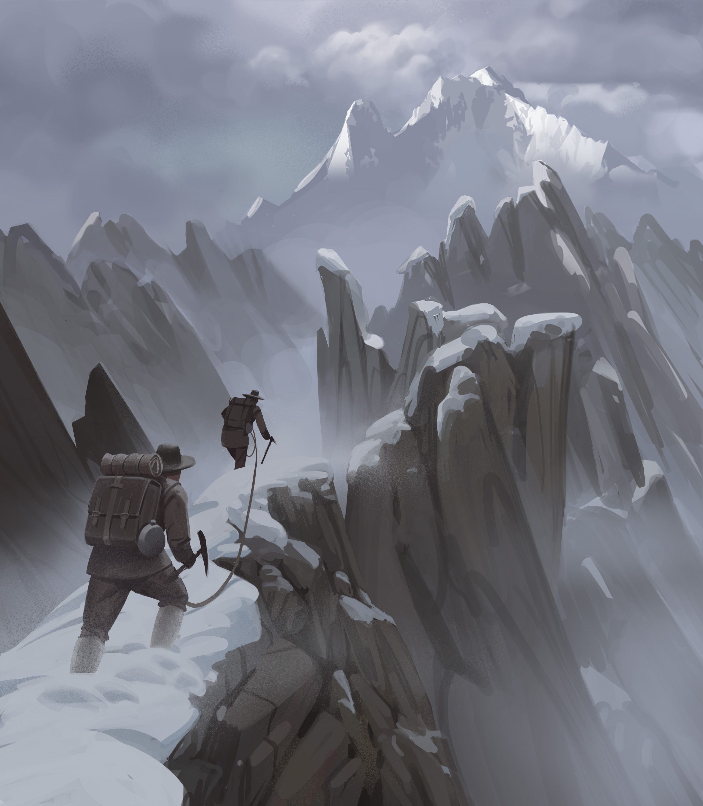

BRAND
Nous ne venons pas du film documentaire pour rien, le story telling est notre force. Ecriture, direction artistique, réalisation, nous produisons des films publicitaires et des contenus digitaux pour les principaux acteurs de la montagne et du sport.

DOCUMENTAIRES
Ceci est notre adn.